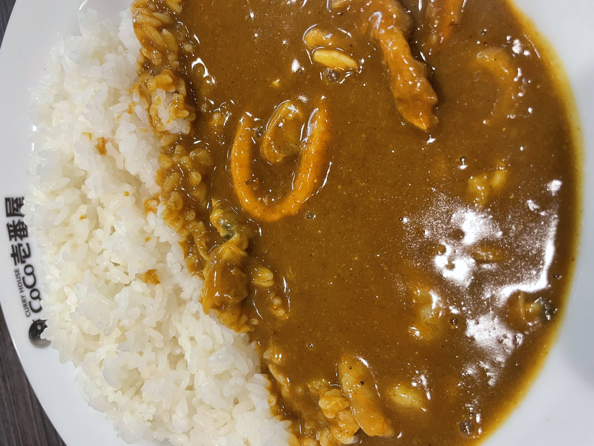
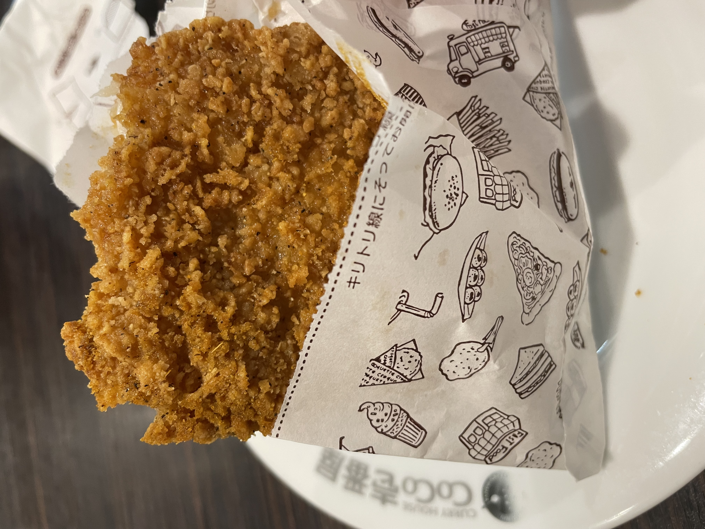
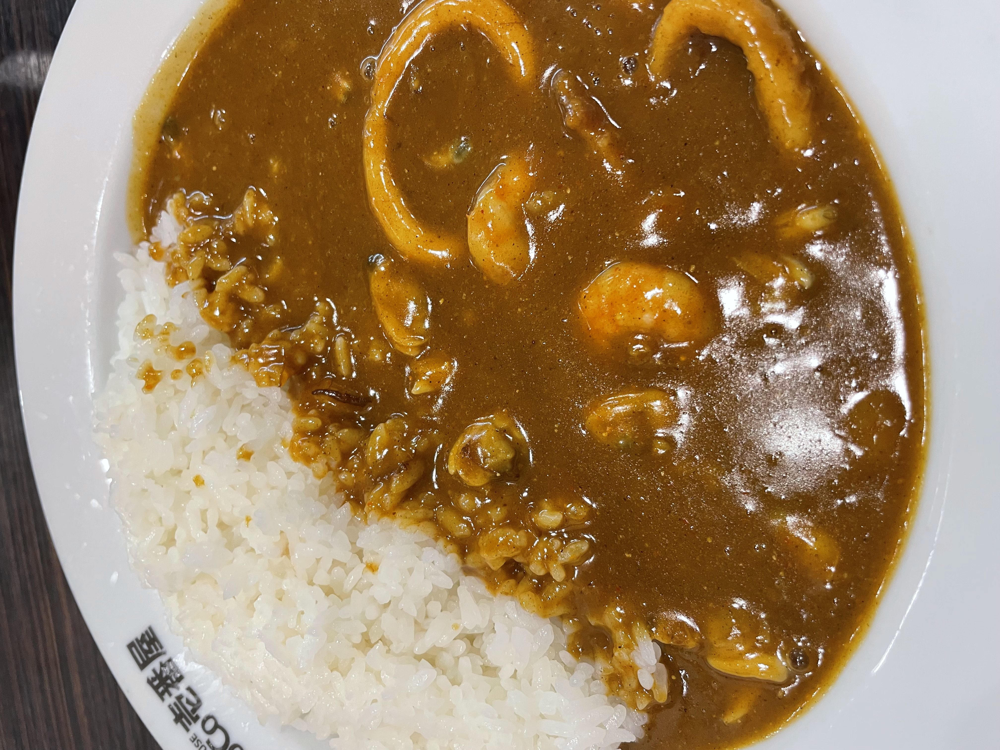
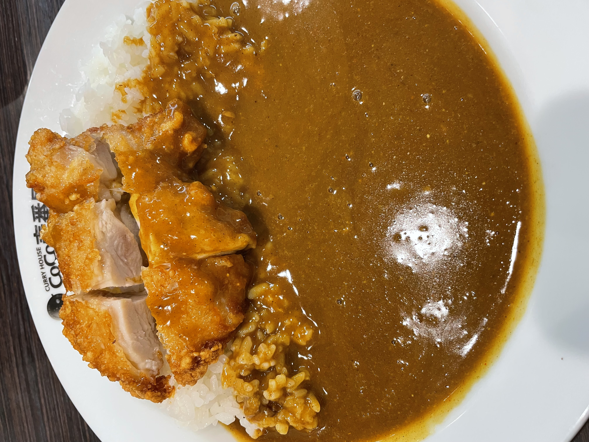
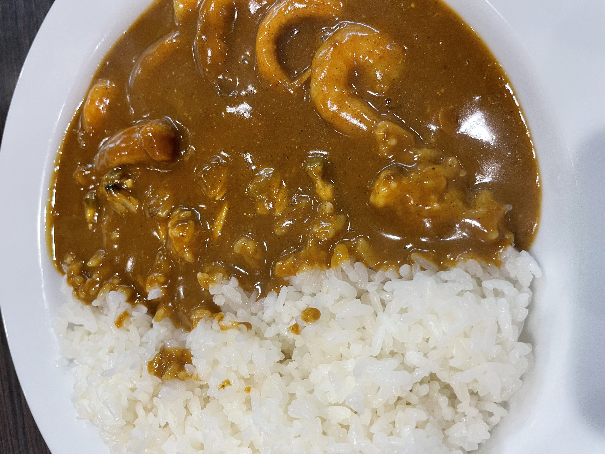
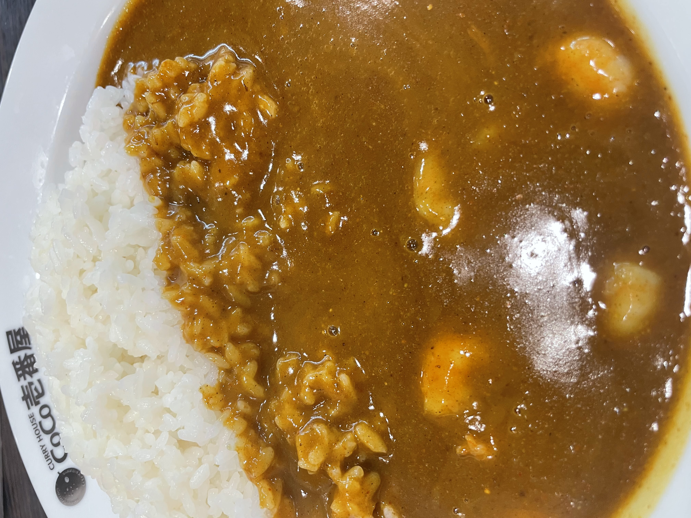
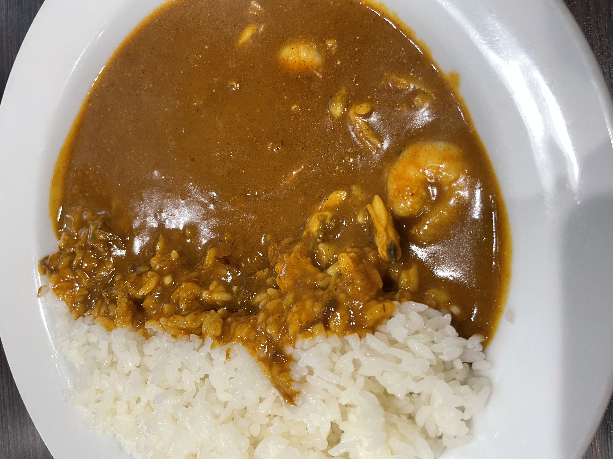

26/9/17（Posted）TERUO＠teruo
It's delicious, but the Seafood Curry should be Spice Level 4.
■Seafood Curry, Spice Level 3
⇒★★★⋆ 3.5
■Curry House CoCo Ichibanya (Chikusa-ku Motoyama Store)
■Nagoya City
■1131 yen
■Ate day：26/7/27

(Photo taken by myself)
26/9/17（Posted）TERUO＠teruo
Pretty interesting. Curry powder, huh.
■CoCode Chicken (Curry Powder)
⇒★★★⋆ 3.5
■Curry House CoCo Ichibanya (Chikusa-ku Motoyama Store)
■Nagoya City
■298 yen
■Ate day：26/7/26

(Photo taken by myself)
26/9/17（Posted）TERUO＠teruo
Delicious.
■Seafood Curry, Spice Level 4
⇒★★★★ 4.0
■Curry House CoCo Ichibanya (Chikusa-ku Motoyama Store)
■Nagoya City
■1156 yen
■Ate day：26/7/26

(Photo taken by myself)
26/9/17（Posted）TERUO＠teruo
Pretty Good. The chicken was indeed crispy.
■Crispy Chicken Curry, Spice Level 4
⇒★★★⋆ 3.5
■CoCo Ichibanya Curry House (Chikusa Ward Motoyama)
■Nagoya City
■1094 yen
■Ate day：26/7/25

（Photo taken by myself）
26/9/17（Posted）TERUO＠teruo
As expected, it’s delicious. I want to eat it again.
■Seafood Curry, Spice Level 4
⇒★★★★ 4.0
■CoCo Ichibanya Curry House (Chikusa Ward Motoyama)
■Nagoya City
■1156 yen
■Ate day：26/7/24

（Photo taken by myself）
26/9/14 (Posted) TERUO＠teruo
Good. The Motoyama location has a nice atmosphere.
■Shrimp Stewed Curry, Spice Level 3
⇒★★★⋆ 3.5
■CoCo Ichibanya (Chikusa Ward Motoyama)
■Nagoya City
■985 yen
■Ate day：26/7/20

(Photo taken by myself)
26/9/2（Posted）TERUO＠teruo
5 spice level is too much. No good.
■Shrimp & Clam Curry, Spice Level 5
⇒★★★ 3.0
■CoCo Ichibanya (Meito-ku Hachimae Branch)
■Nagoya City
■1009 yen
■Ate day：26/7/6

（自分が撮った写真）
26/9/1（Posted）TERUO＠teruo
It was incredibly delicious. The curry on this particular day really hit the spot. The Seafood Curry, level 4 spicy, is delicious. This is development.
■Seafood Curry, level 4 spicy
⇒★★★★ 4.0
■CoCo Ichibanya（Naka-ku Sakae 4-chome）
■Nagoya City
■1156 yen
■Ate day：26/7/5